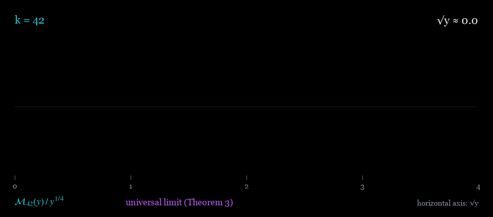

The murmuration density of weight 42, from the origin out to √y = 2000

Animation: the weight-42 murmuration density divided by y to the one quarter, in teal, compared with the universal limit function in purple, as the square root of y runs from 0 to 2000. Every weight settles onto the same purple curve, with the sign (−1)k/2−1, so weights k ≡ 2 mod 4 land on it and weights k ≡ 0 mod 4 on its mirror image.
Theorem 3. For every even \(k>0\), the weight \(k\) murmuration density is $$\mathcal{M}_k(y)=\alpha\sqrt{y}\sum_{d,s\ge1}Q(d)\,\frac{J_{k-1}(4\pi s\sqrt{y}/d)}{s},\qquad Q(d)=\mu^2(d)\prod_{p\mid d}\frac{p^2}{p^4-2p^2-p+1}.$$ As \(y\to\infty\), $$\mathcal{M}_k(y)=(-1)^{k/2-1}\,\frac{\alpha}{\pi\sqrt{2}}\,y^{1/4}\sum_{d,s\ge1}\frac{Q(d)\sqrt{d}}{s^{3/2}}\cos\!\left(\frac{4\pi s\sqrt{y}}{d}-\frac{3\pi}{4}\right)+O(1),$$ and the double sum is absolutely convergent and uniformly bounded.
Here \(\mathcal{M}_k\) is the murmuration density of Theorem 1 and $$\alpha=2\pi\prod_p\frac{p^4-2p^2-p+1}{p^4-2p^2+p}.$$ The purple curve is the main term divided by \(y^{1/4}\), as a function of \(\sqrt{y}\).